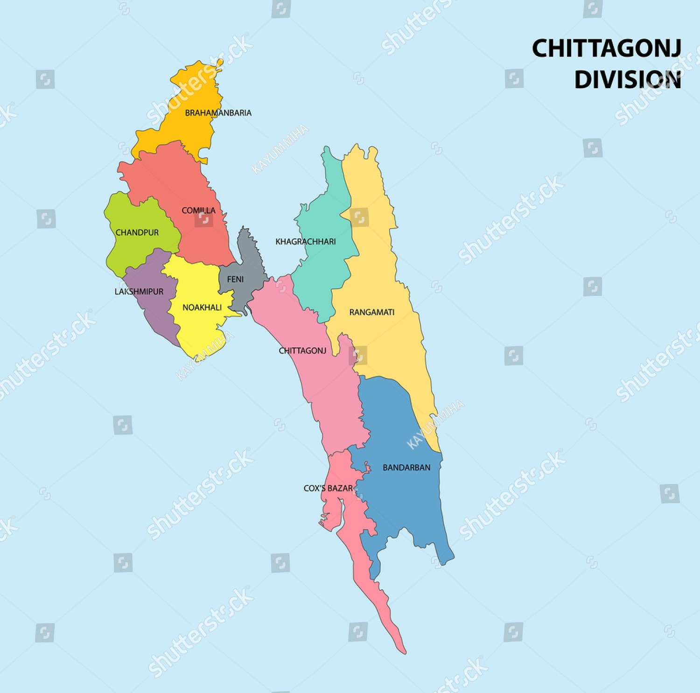

চট্টগ্রাম (ঐতিহাসিক নাম: পোর্টো গ্র্যান্ডে এবং ইসলামাবাদ) বাংলাদেশের বাণিজ্যিক রাজধানী এবং একমাত্র দ্বিমাত্রিক শহর (one city two town) বন্দরনগরী নামে পরিচিত এই শহরটি বাংলাদেশের দক্ষিণ-পূর্বাঞ্চলের চট্টগ্রাম জেলায় অবস্থিত। এটি চট্টগ্রাম বিভাগ এবং জেলার প্রশাসনিক আসন। বাণিজ্যিক রাজধানী হিসেবে পরিচিত পাহাড়, সমুদ্র এবং উপত্যকায় ঘেরা চট্টগ্রাম শহর প্রাকৃতিক সৌন্দর্যের জন্যে প্রাচ্যের রাণী হিসেবে বিখ্যাত। এটি বঙ্গোপসাগরের ব্যস্ততম সমুদ্রবন্দর।[৭] শহরটি পার্বত্য চট্টগ্রাম ও বঙ্গোপসাগরের মধ্যবর্তী কর্ণফুলী নদীর তীরে অবস্থিত। ২০২৩ সালে চট্টগ্রাম সিটি কর্পোরেশনের জনসংখ্যা ছিল ৬০ লক্ষের বেশি এবং চট্টগ্রাম মহানগরীর জনসংখ্যা ছিল ১০০ লক্ষের বেশি।